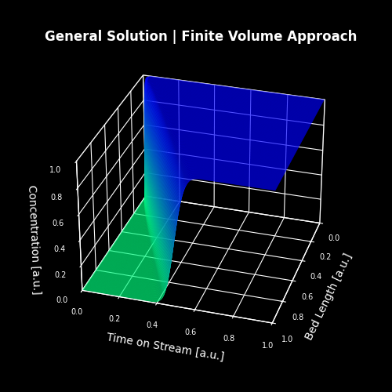

FluxCat Project
The software, developed in Python, enables rapid assessment of the catalytic activity of packed‑bed reactor—systems that are widely employed in chemical processes to convert raw feedstocks into target chemicals. The catalyst is uniformly dispersed over the packing material, which is installed in either a tube or a larger vessel. The bed consists of shaped particles, typically spherical, or cylinders (extrudates), and modern versions also support rings and other geometries that provide a larger surface area than beads. This increased contact area allows the catalyst to achieve higher conversion within the same residence time, thereby improving yield and the economic performance of the catalyst bed.
In practice, feedstocks often contain impurities that progressively deactivate the catalyst. Before a catalytic reaction can take place, an adsorption step is required, which may involve physisorption (weak, temperature‑dependent) or chemisorption (strong, temperature‑resistant). All chemical processes have an activation energy; catalysts lower this value but not to zero, necessitating thermal energy. Most industrial systems operate at several hundred degrees Celsius, where physisorption becomes negligible, allowing contaminants to accumulate in the bed and diminish catalytic activity.
Accurate bed sizing is essential for achieving minimal process operating time. Reactor shutdowns for catalyst replacement typically require several hours to days, depending on the size of the bed. Consequently, selecting the appropriate bed volume is critical to reduce downtime and enhance overall productivity.
Chemisorption can be modeled through adsorption processes, and because the interactions are strong, favorable isotherm models are preferred. The model captures a pronounced increase in surface coverage at low contaminant concentrations compared with higher concentrations, providing realistic predictions of catalyst deactivation. Together, these capabilities offer engineers a fast, reliable, and comprehensive tool for evaluating and optimizing packed‑bed catalytic systems, ultimately driving greater efficiency and profitability in chemical manufacturing.
FluxCat is a graphical user interface built with Kivy that lets an operator enter a wide range of process data — temperature, density, contaminant level, flow rate, pipe diameters, lengths, bulk density, bed geometry, and Bodenstein number — then automatically converts every quantity to SI units, assembles the physical parameters required by a chemical sorption model, and launches a finite‑volume simulation of a catalytic fixed‑bed reactor. The core of the simulation lives in the ChemiSorption class of FVSorption, which solves the advection‑dispersion equation with upwind differencing, applies a film‑diffusion correction, and tracks the concentration of a poisonous species along the reactor length. After the numerical integration finishes, the model determines the elapsed time required for the outlet contaminant concentration to reach a predefined maximum (the “outlet” limit) and reports this duration in hours, days and months. In practice the tool therefore provides a quick, parametric estimate of how long a catalyst bed will remain effective before it must be regenerated or replaced. A typical solution using Flux-Limiter for numerical stability is plotted below:

Catalyst poisoning is the progressive loss of catalytic activity caused by the adsorption of foreign molecules onto the active sites of the catalyst. When a poison binds more strongly than the reactant, it blocks access to the site, reduces the number of available active centers, and can alter the reaction pathway, leading to lower conversion, higher selectivity to undesired products, or complete deactivation. The GUI is shown here:

In the chemical industry, predicting the onset of poisoning is essential for designing economical process schemes: it informs the sizing of catalyst beds, the frequency of regeneration cycles, and the specification of feed purity. By quantifying the time a bed will remain within specification — exactly what FluxCat does — the industry can schedule maintenance during planned downtime, avoid unexpected shutdowns, and evaluate the economic trade‑off between using fresh catalyst versus investing in regeneration technologies. Moreover, understanding how different poison concentrations, temperatures and flow regimes affect deactivation rates enables engineers to optimise operating windows, minimise catalyst consumption, and improve overall plant profitability. In this way, the tool’s estimation of end‑of‑bed life directly supports safer, more reliable and cost‑effective chemical processing.
GitHub: github.com/markus-schindler/FluxCat